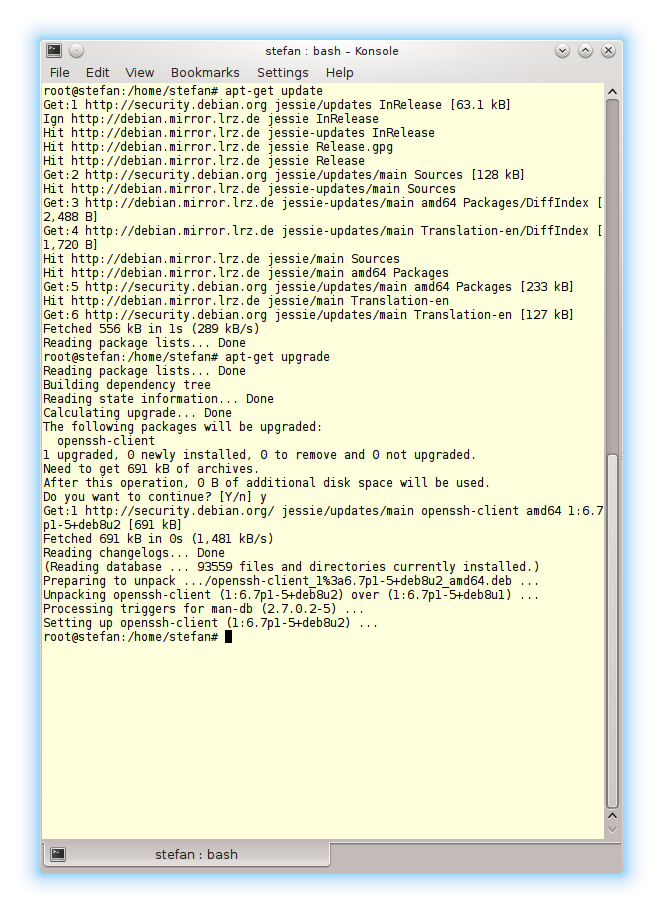

# sudo apt-get update
lassen sich alle auf dem Rechner befindlichen Pakete aktualisieren. Hierbei werden aber keine neuen Pakete installiert, oder alte und nun überflüssige Pakete deinstalliert. Dies lässt sich mit
# sudo apt-get upgrade
bewerkstelligen.

Abb. 1: Konsole mit update und upgrade
Quelle